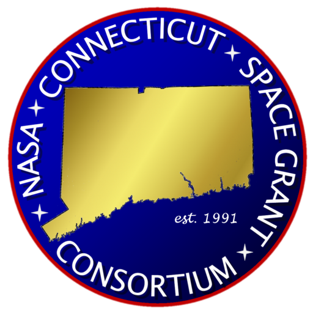

Metivier awarded CT Space Grant Undergraduate Research Fellowship

UConn Physics sophomore, Tyler Metivier, is the recipient of a 2017 Connecticut Space Grant Undergraduate Research Fellowship. Congratulations, Tyler! His project, “Simulating the Detectability of Tidal Features in the Distant Universe”, will use mock galaxies from high resolution cosmological simulations to quantify how well we can recover tidal disturbances in galaxies undergoing major mergers. Tyler will test the effects of surface brightness dimming together with telescope resolution and noise properties. He hopes to make predictions for future space telescopes, such as the James Webb Space Telescope.